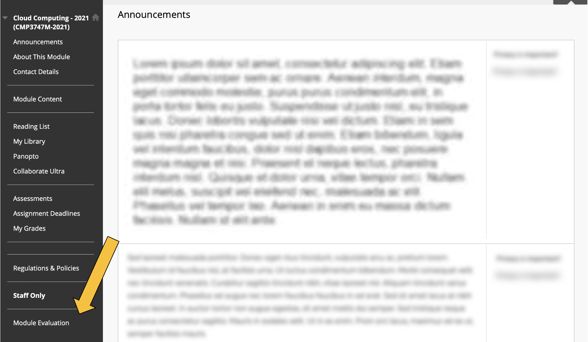

Module Evaluations are a critical part of the year for all students as they allow anyone to have a full say over what they felt their modules have been like, how they have been delivered and how they felt assessments, assignments or any other aspect of the module has been. Module evaluations are an internal tool run by the Lincoln Academy of Learning and Teaching. A key aspect of these evaluations is that they go to inform the teaching bodies at the university on how each area of a module can be improved.
The second opportunity to give feedback is now here and you should start seeing this pop up in your Blackboard menu bars. Remember, lecturers and the people making these decisions have not been in your shoes for perhaps several years; you are living and breathing these experiences, so share them and make each module as great as it can be! All feedback is very welcome!
Although the responses from the module evaluations have not been published to students (there are some internal changes in who owns these evaluations - this is being pushed by the SU), I can share some insights below into what the SoCS evaluations looked like. Unfortunately, I have requested but I am not permitted to publish the whole document, which is just an excel spreadsheet, copied and pasted onto a Word doc (I know, right?), and is tricky to parse.
Background
From a survey population of 13,176 students there were 4,004 responses. This was 30.44% and was lower than anticipated. It was assumed this was because of survey fatigue and the need for better communication of the surveys. For the College of Science we had 902 responses from a survey population of 3,307 students. Within the SoCS we had 126 responses from a population of 763 students, so around a 16% response rate overall. This was one of the lowest turn outs with similar size schools, School of Life Sciences, with 938 students and receiving 418 responses (44.56%). It is not clear what they did differently to improve their response rate.
Questions
There were 6 questions in total that required responses as well as an area to put any further information. The response format was based on a typical Likert scale. But, the results provided did not include this full set of information. What was published was how many students (%) selected the highest ranges such as 'Excellent/Good', 'Found It Easy', 'Agree', etc. For the School of Computer Science these questions and results are as follows:
If you would like to know more about these results and how they are being used to improve your experiences please contact your program leader.
The Module Evaluations forms can be found on each modules relevant Blackboard page. They link is on the bottom of the Left hand Side black vertical banner. This can be at the top or bottom of the menu display. See image below for an example:
Remember, we are here to help. If you are not having the experience you want then please reach out and let us know. You can contact any one of us through our email links or anonymously using our Feedback page. All emails are received in the strictest of confidence. No concern or idea is too small.